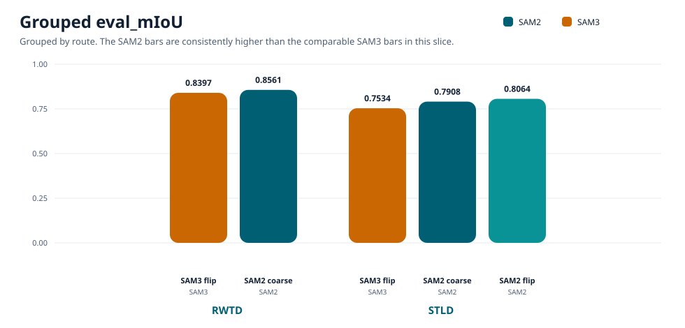
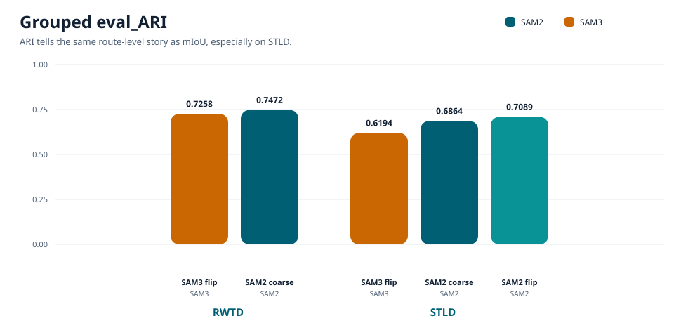

RWTD Winner
0.8561
SAM2 coarse · ARI 0.7472
Automatic binary texture partitioning with frozen features and coarse clustering on RWTD and STLD. In this narrow unsupervised route, the SAM2 variants outperform the comparable SAM3 variants on the headline evaluation metrics, while STLD aggregate mIoU stays nearly flat around 0.5 and is better treated as a caution metric than as the main story.
This page compares automatic binary partitioning from frozen SAM features on RWTD and STLD. The compared route is deliberately narrow: no prompts, no supervised decoder, and no learned downstream segmentation head, just coarse clustering over frozen features.
Within that route, the requested SAM2 rows outperform the comparable SAM3 rows on the main evaluation metrics. The page also marks a caution explicitly: on STLD, miou_agg stays nearly flat around 0.5, so it should be treated as a low-signal aggregate view rather than the main story.
This table uses the exact published bundle metrics for the five requested rows. CAID is intentionally left out of this page because the matching CAID SAM2 flip-avg row is still missing for the focused SAM2-vs-SAM3 story.
| Route | Dataset / Split | Variant | Model | Evaluated Samples | eval_miou | eval_ari | miou_agg |
|---|---|---|---|---|---|---|---|
| RWTD | aviadcohz/RWTDtest |
feature_cluster_coarse_to_fine_global_pooled_init_coarse_only_sam2 |
facebook/sam2-hiera-small |
227 | 0.856065 | 0.747178 | 0.528148 |
| RWTD | aviadcohz/RWTDtest |
feature_cluster_coarse_to_fine_global_pooled_init_flip_avg_coarse_only |
facebook/sam3 |
227 | 0.839748 | 0.725812 | 0.513749 |
| STLD | architexture:stldbenchmark |
feature_cluster_coarse_to_fine_global_pooled_init_coarse_only_sam2 |
facebook/sam2-hiera-small |
200 | 0.790776 | 0.686396 | 0.500000 flat / low-signal on STLD |
| STLD | architexture:stldbenchmark |
feature_cluster_coarse_to_fine_global_pooled_init_flip_avg_coarse_only |
facebook/sam3 |
200 | 0.753395 | 0.619408 | 0.500825 flat / low-signal on STLD |
| STLD | architexture:stldbenchmark |
feature_cluster_coarse_to_fine_global_pooled_init_flip_avg_coarse_only_sam2 |
facebook/sam2-hiera-small |
200 | 0.806408 | 0.708896 | 0.500000 flat / low-signal on STLD |


| Comparison | Improved Row | SAM3 Baseline | Δ mIoU | Δ ARI | Reading |
|---|---|---|---|---|---|
| RWTD: SAM2 coarse vs SAM3 flip | RWTD · SAM2 coarse_only |
RWTD · SAM3 flip_avg |
+0.016317 | +0.021366 | Positive direction, but smaller than STLD and still worth reading cautiously until parity questions are locked down. |
| STLD: SAM2 coarse vs SAM3 flip | STLD · SAM2 coarse_only |
STLD · SAM3 flip_avg |
+0.037381 | +0.066988 | Clear STLD uplift in both headline metrics. |
| STLD: SAM2 flip vs SAM3 flip | STLD · SAM2 flip_avg |
STLD · SAM3 flip_avg |
+0.053013 | +0.089487 | Largest in-page gain. The SAM2 flip-avg variant is the strongest STLD row in this slice. |
miou_agg is Essentially FlatThe STLD aggregate mIoU values are 0.500000, 0.500825, and 0.500000. That spread is only 0.000825, so this aggregate view is low-signal for the STLD route and should not carry the interpretation.
eval_miou and eval_arimiou_agg barely moves.miou_agg as a caution metric here, not the headline metric.On the requested RWTD pair, SAM2 coarse_only beats the comparable SAM3 flip_avg row by +0.016317 mIoU and +0.021366 ARI across 227 test crops.
Direction is favorable, but this route should still be read carefully until evaluator and preprocessing parity are fully locked.
STLD shows the clearer separation. SAM2 coarse beats the SAM3 flip baseline by +0.037381 mIoU / +0.066988 ARI, and SAM2 flip extends that to +0.053013 / +0.089487.
miou_agg stays nearly flat around 0.5, so eval_miou and eval_ari are the operative signal here.
The panels below reuse the run-emitted triptychs. They are chosen to make the route-level story visible quickly rather than to present an exhaustive gallery.
This granular crop has a narrow central light band flanked by two different coarse textures. SAM2 coarse tracks the split cleanly, while the comparable SAM3 flip-avg run collapses the center into a broad blob.


On this compact synthetic foreground, both SAM2 variants recover the object cleanly. The SAM3 flip baseline expands into a large false-positive disk instead.


The thin oblique strip is a harder shape. SAM2 coarse recovers part of it, SAM2 flip captures more of it, and the SAM3 flip baseline nearly collapses the signal.


This does not mean SAM2 is the stronger model overall. It does suggest that, for this specific prompt-free frozen-feature clustering route, the SAM2 features are more cluster-friendly than the comparable SAM3 features. STLD is controlled and synthetic, so its advantage should not be over-weighted against RWTD, but the result is still strong enough to keep as a serious ablation and baseline.
miou_agg is visually marked as low-signal because it is nearly constant across variants.